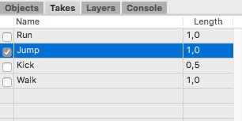

Take Manager
The take manager is a very powerful tool when it come to create independent animation takes or clips. For example if you have a big architectural model and you want to create several independent camera fly through the building. An other area where takes are very important is the creation of animated characters for 3D games. These characters can perform various movements like running, jumping, kicking and so on. With the take manager you can records each of these animation into its own take.
{kind=link}

The take manager is a table view with three columns. The first column displays which take is currently active. When you now record keys these keys will be recorded in the active take. In the screenshot above the "Run" take is active.
The second column displays the name of the take. These names have to be unique otherwise you can mix up the different takes.
The last column finally displays the length of the take in seconds. That length will also determine the total length of the time line.
To create a new take just make a right mouse click into the take manager and choose the "New Take" menu command form the context menu.

Since the takes system in Cheetah3D is compatible to the very popular FBX file format you can easily move your animation data to other animations systems or use it in game development systems like Unity.